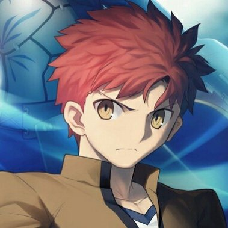

《Fate/stay night》
命運/停駐之夜
前言:
我不會詳細介紹Fate stay night 的劇情故事，我希望可以讓大家粗略知道Fate的一些設定還有故事的大綱以及推薦的看番順序，想知道Fate在演什麼的，請自己去看動畫還是漫畫、小說或甚至去玩fate最一開始的文字遊戲。
《Fate/stay night》

我們的男主角衛宮士郎
在故事裡衛宮士郎會因為經歷各種事情以及做出的選擇跟下面的三位女主角會發生三個不一樣的劇情故事，也就是三條世界線。
但是每個不同的故事線裡頭，三位女主角也都很重要。
先講這部《Fate/stay night》裡頭的一些背景設定
Fate的歷史背景

聖杯戰爭流程
Fate stay night
Saber線、UBW線 和HF線的故事我就不介紹了
想知道Fate的故事劇情Saber線和UBW線在巴哈的動畫瘋都可以看到
HF線因為是做成電影而且是三部曲現在可能沒辦法在網路上看到
正版的動畫
最後我在介紹入Fate這個坑的方式